Dateiliste
Zur Navigation springen
Zur Suche springen
Diese Spezialseite listet alle hochgeladenen Dateien auf.
{kind=link}
| Datum | Name | Vorschaubild | Größe | Benutzer | Beschreibung | Versionen |
|---|---|---|---|---|---|---|
| 13:28, 6. Mär. 2017 | YtongPyramide.jpeg (Datei) |  |
70 KB | InsektenProfi | Ein Ameisennest aus Ytong muss nicht immer ein langweiliger Block sein. Der YouTuber InsektenProfi hat auf YouTube eine passende Bauanleitung veröffentlicht um solch eine Pyramide nach zu bauen | 1 |
| 13:09, 6. Mär. 2017 | Betonnest.jpg (Datei) |  |
64 KB | InsektenProfi | Das erste Betonnest seiner Art wurde 2017 vom YouTuber InsektenProfi entwickelt | 2 |
| 20:27, 23. Aug. 2015 | Manica rubida bei der Aufnahme von Honigtau.JPG (Datei) |  |
786 KB | Reber | Manica rubida Arbeiterinnen bei der Trophobiose. Bild entstand in Montbovon im Juni 2015 Weitere Bilder sind unter folgendem Link zu finden: http://www.ameisenportal.eu/viewtopic.php?f=48&t=503&p=7905&hilit=manica+rubida&sid=1c03c0d1bbc49607e4d1e31d50… | 1 |
| 14:33, 21. Feb. 2015 | Gut Holz für Holzameisen 1.JPG (Datei) |  |
232 KB | B.K.H.Schnebele | Lasius fuliginosus(LATREILLE 1798) im unteren Bereich eines Fichtenstammes Neben dem Pilz Cladosporium myrmecophilum dürfte hier auch Borkenkäferbefall von Interesse gewesen sein. Angaben zum Standort Jene Fichte befindet sich südlich der Behausung… | 1 |
| 15:38, 11. Dez. 2014 | Thoraxlänge.jpg (Datei) |  |
66 KB | A. Buschinger | 2 | |
| 14:00, 21. Nov. 2014 | Microrubra-9.jpg (Datei) |  |
133 KB | A. Buschinger | 1 | |
| 13:57, 21. Nov. 2014 | Microrubra-7-8.jpg (Datei) |  |
312 KB | A. Buschinger | 1 | |
| 13:55, 21. Nov. 2014 | Microrubra-5-6.jpg (Datei) |  |
264 KB | A. Buschinger | 1 | |
| 13:53, 21. Nov. 2014 | Microrubra-3-4.jpg (Datei) |  |
260 KB | A. Buschinger | 1 | |
| 13:50, 21. Nov. 2014 | Microrubra-1-2.jpg (Datei) |  |
218 KB | A. Buschinger | 1 | |
| 13:58, 29. Aug. 2014 | Pharao-459.jpg (Datei) |  |
187 KB | A. Buschinger | Monomorium pharaonis: Blick in eine Kammer eines großen Laborvolkes. | 1 |
| 13:53, 29. Aug. 2014 | Pharao-460-web.jpg (Datei) |  |
186 KB | A. Buschinger | Pharaoameisen mit Gynen. Sie sind ebenso wie die Männchen geflügelt, fliegen jedoch nicht. Die Paarung findet im Nest statt, die Gynen werfen danach die Flügel ab. Nach jeweils etwa drei Monaten sterben die alten begatteten Königinnen, aber gleichz… | 1 |
| 13:45, 29. Aug. 2014 | Pharao-2-462web.jpg (Datei) |  |
185 KB | A. Buschinger | Im Bild sieht man im unteren Bereich eine Ansammlung rötlicher Krümel: Das ist ein Nahrungsvorrat, bestehend aus zerkleinerter Muskulatur von Schaben. In befallenen Wohnungen werden solche Lager hinter Tapeten oder in anderen Verstecken angelegt (aus… | 1 |
| 07:09, 28. Mai 2014 | Detail-L.-niger 4246.jpg (Datei) | 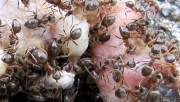 |
104 KB | A. Buschinger | Lasius niger ist nicht völlig schwarz. Hier sind Sammlerinnen an einer Jungvogel-Leiche. Die Farbe des Thorax variiert von graubraun bis sogar rötlich. | 1 |
| 09:29, 14. Feb. 2014 | C.-gigas-mit-Zikaden.jpg (Datei) | 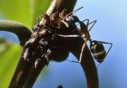 |
127 KB | A. Buschinger | Camponotus gigas: Arbeiterin melkt Zikadenlarven. Sie war ausgesprochen spezialisiert auf das "Hüten" und "Melken". Regelmäßig in wenigen Minuten Abstand kam eine weitere Arbeiterin, die in Mund-zu-Mund-Fütterung den Honigtau übernahm und dann Ric… | 1 |
| 17:26, 28. Jan. 2014 | Acropyga-paleartica-Gyne.jpg (Datei) |  |
106 KB | A. Buschinger | Acropyga paleartica Jungkönigin mit Schmierlaus-Larve auf dem Hochzeitsflug (Präparat) | 2 |
| 19:32, 19. Jan. 2014 | C.-fellah-Taster-D.-Epli.jpg (Datei) | 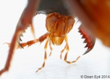 |
71 KB | A. Buschinger | Die Mundwerkzeuge einer Ameise unterhalb der Mandibeln: Die langen, 6-gliedrigen [[Taster gehören zu den Maxillen („Unterkiefertaster“, Maxillartaster), die kürzeren mit 4 Gliedern sind die „Lippentaster“ (Labialtaster). Die A… | 1 |
| 19:28, 19. Jan. 2014 | C.-fellah-Mundwerkz.-D.-Epli.jpg (Datei) | 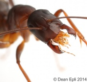 |
98 KB | A. Buschinger | Das Bild zeigt deutlich die hellbraune Oberlippe (das Labrum), in der Mitte schwalbenschwanzartig eingekerbt, und nach hinten scharf abgegrenzt gegen den mächtigen Clypeus mit seinem Mittelkiel. Ebenso ist sehr gut die für Camponotus charakt… | 1 |
| 11:10, 16. Jan. 2014 | HS-Rz-Strecken.jpg (Datei) |  |
121 KB | A. Buschinger | „Strecken“ einer Arbeiterin von Harpagoxenus sublaevis beim Raubzug auf ein Volk der Sklavenart Leptothorax acervorum. Die Mittel- und Hinterbeine der Arbeiterinnen zeigen heftiges Ziehen an. Die gefährlichen Mandibeln der Harpagoxenus-Angreiferin… | 1 |
| 18:25, 16. Dez. 2013 | Lasius s. str. IMG 5749 Beispiel Strecken.jpg (Datei) |  |
83 KB | Juxi | Flensburg, Osttangente, Überlauf, BUND-Gelände, 10.04.2011 | 1 |
| 11:56, 16. Dez. 2013 | Tragebeispiel Leptothorax acervorum IMG 7347.JPG (Datei) |  |
61 KB | Juxi | Flensburg, 24.06.2010, BUND-Gelände, Scherrebek, alter Zaunpfahl | 1 |
| 10:36, 10. Dez. 2013 | Camponotus ligniperdus im Holznest 4.jpg (Datei) | 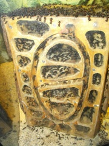 |
1,95 MB | DmdM | Holznest einer großen Kolonie von ''Camponotus ligniperdus'' 2013, seit zwei Wochen aus der Winterruhe im Kühlschrank. ([http://www.ameisenforum.de/einheimische-europ-ische-ameisen/44716-camponotus-ligniperdus-im-holznest-fotos.html mehr … | 1 |
| 10:36, 10. Dez. 2013 | Camponotus ligniperdus im Holznest 3.jpg (Datei) | 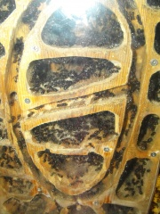 |
1,88 MB | DmdM | Holznest einer großen Kolonie von ''Camponotus ligniperdus'' 2013, seit zwei Wochen aus der Winterruhe im Kühlschrank. ([http://www.ameisenforum.de/einheimische-europ-ische-ameisen/44716-camponotus-ligniperdus-im-holznest-fotos.html mehr … | 1 |
| 10:36, 10. Dez. 2013 | Camponotus ligniperdus im Holznest 2.jpg (Datei) | 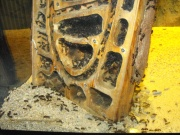 |
780 KB | DmdM | Holznest einer großen Kolonie von ''Camponotus ligniperdus'' 2013, seit zwei Wochen aus der Winterruhe im Kühlschrank. ([http://www.ameisenforum.de/einheimische-europ-ische-ameisen/44716-camponotus-ligniperdus-im-holznest-fotos.html mehr … | 1 |
| 10:35, 10. Dez. 2013 | Camponotus ligniperdus im Holznest 1.jpg (Datei) | 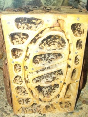 |
1,93 MB | DmdM | Holznest einer Kolonie von ''Camponotus ligniperdus'' Mitte 2012, Gründung 2005. ([http://www.ameisenforum.de/einheimische-europ-ische-ameisen/44716-camponotus-ligniperdus-im-holznest-fotos.html mehr Informationen]) Bildautor: [http://www.ame… | 1 |
| 15:03, 14. Okt. 2013 | Formica rufa Kopf.jpg (Datei) | 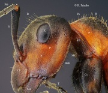 |
403 KB | A. Buschinger | 1 | |
| 16:05, 5. Okt. 2013 | Harpegnathos-venator.jpg (Datei) | 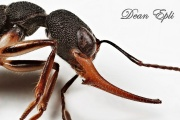 |
147 KB | A. Buschinger | Kopf einer Harpegnathos venator -Arbeiterin lateral. Hochgeladen mit frdl. Genehmigung des Bildautors, Dean Epli, zur alleinigen Nutzung im Ameisenwiki. | 1 |
| 07:49, 3. Okt. 2013 | Putzapparat-von Acromyrmex.jpg (Datei) | 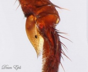 |
101 KB | A. Buschinger | Putzapparat einer Acromyrmex sp. - Arbeiterin. Am unteren Ende der Vordertibia ist (im Bild rechts) das erste Tarsus-Glied eingelenkt, links sitzt der Putzkamm, dessen Bürste der ebenfalls behaarten Putzscharte (Einsenkung des Tarsus-Grundglieds) gege… | 1 |
| 16:30, 25. Aug. 2013 | Bombus-Kopula-3240.jpg (Datei) |  |
156 KB | A. Buschinger | Ein Pärchen der Erdhummel, Bombus terrestris, in Kopula. 2013-08-08, Reinheim, S-Hessen. | 1 |
| 18:58, 6. Aug. 2013 | KöniginLasiusflavus.jpeg (Datei) |  |
282 KB | Bruce | 1 | |
| 16:53, 28. Jul. 2013 | Camponotus sp. On lookout by Christopher Porter.jpg (Datei) |  |
453 KB | DmdM | '''Beschreibung''': ''Camponotus''-Königin, die durch die Entfernung eines Zaunes bei der Gründung gestört wurde; im Hintergrund sichtbar die Gründungskammer mit Brut :Originalbeschreibung: An ant discovered while removing an old fe… | 1 |
| 10:05, 18. Jun. 2013 | Aphaenogaster subterranea Larven an Mehlwurm.jpg (Datei) |  |
113 KB | A. Buschinger | 1 | |
| 15:49, 16. Jun. 2013 | Ouvriere formica fuscocinerea taxo reduit.jpg (Datei) |  |
26 KB | Witzman | http://keyants.free.fr/ http://creativecommons.org/licenses/by-nc-nd/2.0/de/ | 1 |
| 15:16, 9. Jun. 2013 | Myrmica cf rubra Hochwasserüberlebende kümmert sich um Opfer.JPG (Datei) |  |
960 KB | St.pa | Aufgenommen an einer Böschung am Saale-Radwanderweg, die 7 Tage mit ordentlich Strömung unter Wasser stand. Eine einzelne überlebende Arbeiterin, wenige cm über der zurückweichenden Hochwasserkante an einem teilweise freigespühlten Erdnest, träg… | 1 |
| 15:09, 9. Jun. 2013 | Myrmica cf rubra Hochwasserüberlebende an freigespühltem Erdnest.JPG (Datei) |  |
1,4 MB | St.pa | Aufgenommen an einer Böschung am Saale-Radwanderweg, die 7 Tage unter Wasser stand. Eine einzelne Arbeiterin, wenige cm über der zurückweichenden Hochwasserkante an einem teilweise freigespühlten Erdnest. | 1 |
| 14:59, 9. Jun. 2013 | Myrmica cf rubra Hochwasserüberlebende 2.JPG (Datei) |  |
554 KB | St.pa | Aufgenommen an einer Böschung am Saale-Radwanderweg, die 7 Tage unter Wasser stand. Eine einzelne Arbeiterin, wenige cm über der zurückweichenden Hochwasserkante. | 1 |
| 14:55, 9. Jun. 2013 | Myrmica cf rubra Hochwasserüberlebende.JPG (Datei) |  |
934 KB | St.pa | Aufgenommen an einer Böschung am Saale-Radwanderweg, die 7 Tage unter Wasser stand. Eine einzelne Arbeiterin, wenige cm über der zurückweichenden Hochwasserkante. | 1 |
| 22:11, 7. Jun. 2013 | Lasius flavus Nest nach Hochwasser.JPG (Datei) |  |
1,88 MB | St.pa | Dieses Lasius cf. flavus Erdnest an einem Baum am Saale-Radwanderweg bei Camburg stand tagelang unter Wasser. sofort nach Weichen des Wassers begannen die Überlebenden Arbeiterinnen mit den Reparaturarbeiten. Einen Tag im Trockenen, kaum ein Unterschi… | 1 |
| 22:07, 7. Jun. 2013 | Hochwasserbaum mit Lasius flavus-Nest.JPG (Datei) |  |
1,23 MB | St.pa | Am Saale-Radwanderweg bei Camburg, diese Bäume standen etwa 5-6 Tage unter Wasser. Ein großes Nest von Lasius cf. flavus hat scheinbar überlebt. | 1 |
| 21:35, 7. Jun. 2013 | Ameisentraube am Grashalm im Hochwasser.JPG (Datei) |  |
784 KB | St.pa | Am Saale-Radwanderweg bei Camburg steht der Wiesenstreifen und dieser Grashalm seit etwa 5-6 Tagen (beim Hochwasserscheitel auch kurz (wenige Stunden) komplett der Länge nach) unter Wasser, es gibt noch keine Verbindung zum trockenen Ufer, das Hochwas… | 1 |
| 19:19, 6. Jun. 2013 | Einzelne obdachlose Arbeiterin.JPG (Datei) |  |
711 KB | St.pa | Dieses Hochwasseropfer fand ich, wie es auf Grashalmen umherirrte, die das zurückweichende Hochwasser am Saale-Radwanderweg wieder freigegeben hat. Noch stehen die Halme knietief im Wasser, sie waren mindestens einen Tag lang komplett überspühlt, un… | 1 |
| 19:14, 6. Jun. 2013 | Einzelne obdachlose Arbeiter verschiedener Arten.JPG (Datei) | 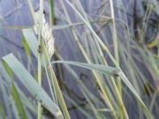 |
1,18 MB | St.pa | Diese beiden Hochwasseropfer fand ich, wie sie auf Grashalmen umherirrten, die das zurückweichende Hochwasser am Saale-Radwanderweg wieder freigegeben hat. Noch stehen die Halme knietief im Wasser, sie waren mindestens einen Tag lang komplett übersp… | 1 |
| 19:05, 6. Jun. 2013 | Trophallaxis von Lasius sp. und Blattläusen an Holunder.JPG (Datei) |  |
380 KB | St.pa | Aufgenommen bei sonnigen 22°C in einem Garten im Stadtzentrum von Jena an einem Stengel eines Holunderstrauches. Die Arten kenne ich nicht, falls sie jemand bestimmen mag wäre ich dankbar. | 1 |
| 20:19, 4. Jun. 2013 | Nest zwischen Bordsteinen nach Hochwasser 3.jpeg (Datei) |  |
1,84 MB | St.pa | L. niger (?) Kolonie zwischen Bordsteinen am Saale-Radwanderweg in Camburg hinter dem Gerätehaus der Feuerwehr nach zwei- bis dreitägiger Überflutung durch Hochwasser. Eine einzelne gelbe (L. flavus ?) hat sich von zwei Bordsteinspalten weiter unten… | 1 |
| 20:09, 4. Jun. 2013 | Nest zwischen Bordsteinen nach Hochwasser 2.jpeg (Datei) |  |
1,83 MB | St.pa | L. niger (?) Kolonie zwischen Bordsteinen am Saale-Radwanderweg in Camburg hinter dem Gerätehaus der Feuerwehr nach zwei- bis dreitägiger Überflutung durch Hochwasser. Eine einzelne gelbe (L. flavus ?) hat sich von zwei Bordsteinspalten weiter unten… | 1 |
| 19:53, 4. Jun. 2013 | Nest zwischen Bordsteinen nach Hochwasser.jpeg (Datei) |  |
1,8 MB | St.pa | L. niger (?) Nest zwischen Bordsteinen am Saale-Radwanderweg in Camburg hinter dem Gerätehaus der Feuerwehr nach zwei- bis dreitägiger Überflutung durch Hochwasser. Emsiges Gewusel an den Nestausgängen, weite Straßen mit hunderten Arbeiterinnen du… | 1 |
| 19:40, 4. Jun. 2013 | Saale-Radwanderweg Camburg.jpeg (Datei) |  |
1,54 MB | St.pa | Diese am Gerätehaus der Feuerwehr gelegene Zufahrt zum Saale-Radwanderweg in Camburg stand beim Hochwasser 2013 am 2.6. und 3.6. für etwa zwei bis drei Tage unter Wasser. Den höchsten Punkt markiert eine dreckige kurvige Linie auf halber Höhe zwisc… | 1 |
| 19:33, 4. Jun. 2013 | Lasius flavus Erdnest Nahaufnahme zwei Tage nach Hochwasser.jpeg (Datei) | 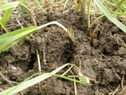 |
1,79 MB | St.pa | Dieses Erdnest befindet sich ca. 5m von der historischen Holzbrücke auf der Garteninsel unter der Burg in Camburg an der Saale und stand beim Hochwasserscheitel in der Nacht vom 2.6.'13 zu Montag 3.6. für höchstens ein paar Stunden unter Wasser. Zwe… | 1 |
| 19:21, 4. Jun. 2013 | Lasius flavus Erdnest zwei Tage nach Hochwasser.jpeg (Datei) | 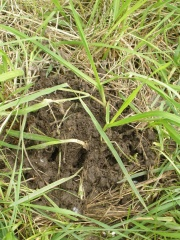 |
1,85 MB | St.pa | Dieses Erdnest befindet sich ca. 5m von der historischen Holzbrücke auf der Garteninsel unter der Burg in Camburg an der Saale und stand beim Hochwasserscheitel in der Nacht vom 2.6.'13 zu Montag 3.6. für höchstens ein paar Stunden unter Wasser. Zwe… | 1 |
| 19:09, 4. Jun. 2013 | Historische Brücke Camburg.jpeg (Datei) | 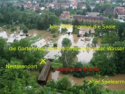 |
1,38 MB | St.pa | Die Garteninsel unter der Burg in Camburg an der Saale beim Hochwasser am Nachmittag des ersten Juni 2013, photographiert von der Burg aus nach unten. Scheitelpunkt des Hochwassers war in dieser Stelle gegen Mitternacht vom zweiten zum dritten Juni. Di… | 1 |
{kind=link}
{kind=link}
{kind=link}
{kind=link}
{kind=link}
{kind=link}
{kind=link}
{kind=link}
{kind=link}
{kind=link}
{kind=link}
{kind=link}
{kind=link}
{kind=link}
{kind=link}
{kind=link}
{kind=link}
{kind=link}
{kind=link}
{kind=link}
{kind=link}
{kind=link}
{kind=link}
{kind=link}
{kind=link}
{kind=link}
{kind=link}
{kind=link}
{kind=link}
{kind=link}
{kind=link}
{kind=link}
{kind=link}
{kind=link}
{kind=link}
{kind=link}
{kind=link}
{kind=link}
{kind=link}
{kind=link}
{kind=link}
{kind=link}
{kind=link}
{kind=link}
{kind=link}
{kind=link}
{kind=link}
{kind=link}
{kind=link}
{kind=link}
{kind=link}
{kind=link}
{kind=link}
{kind=link}
{kind=link}
{kind=link}
{kind=link}
{kind=link}
{kind=link}
{kind=link}
{kind=link}
{kind=link}
{kind=link}
{kind=link}
{kind=link}